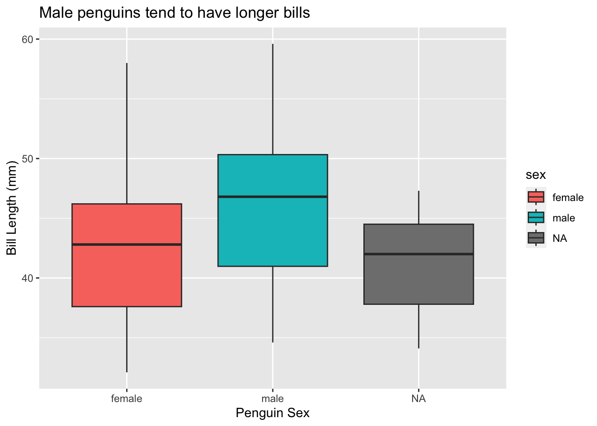
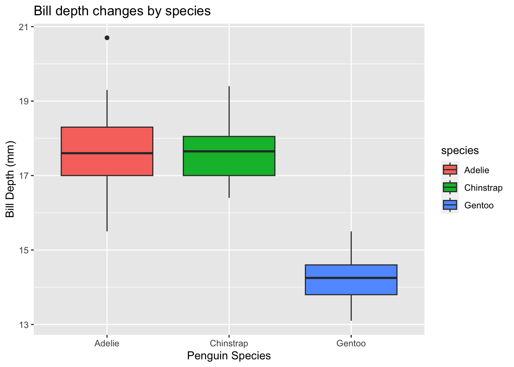
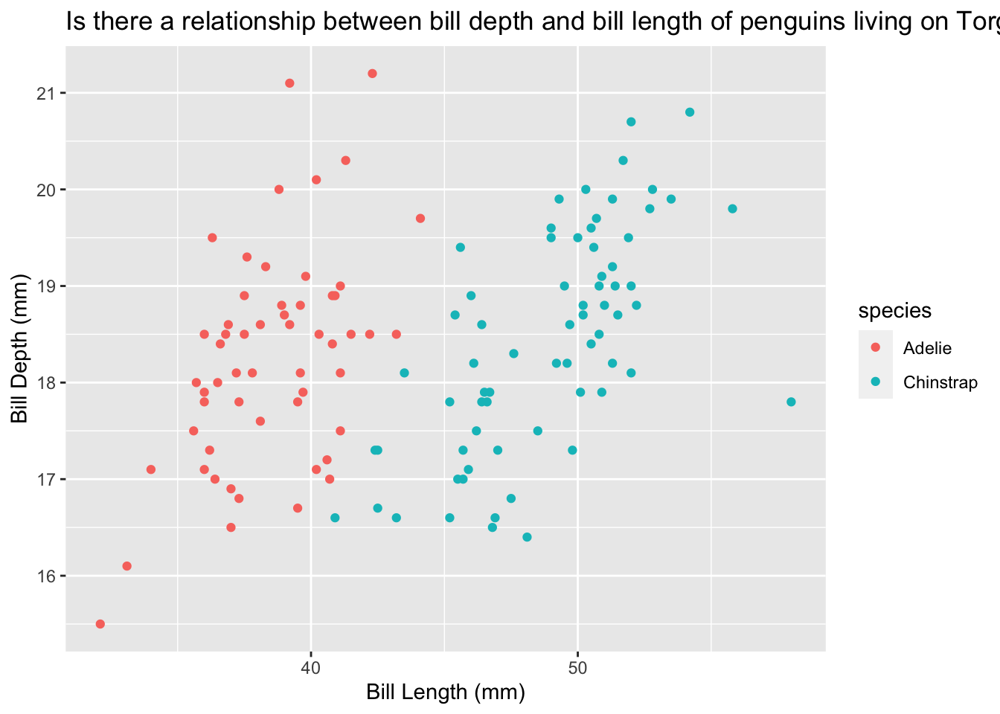

Bootcamp Practices
You can save a blank version of this lesson to your computer to run the code chunks yourself by downloading the file below and opening it in your R studio. Come back and check your answers here!
Once you’ve completed the lesson
Expand To See Solutions
Bootcamp Lesson 1
Practice with
- Variables
- Functions
- Printing to the screen
- Assign the number 500 to the variable numberButterflies
numberButterflies <- 500- Calculate the cubed root of 26 and assign it to the variable y
y <- 26^(1/3)- Print the variable y
y[1] 2.962496Bootcamp Lesson 2
Practice with
- Packages
- Accessing specific columns in a data set
- Assigning variables
- Select
- Filtering
- (Install if you haven’t completed lesson 2) and load the tidyverse and palmerpenguins packages.
install.packages("tidyverse", repos = "http://cran.us.r-project.org")Installing package into '/Users/MilaUserAccount/Library/R/x86_64/4.2/library'
(as 'lib' is unspecified)
The downloaded binary packages are in
/var/folders/8_/66ctd00n6b9839b2ghhk1gjw0000gp/T//Rtmpbzhkoz/downloaded_packagesinstall.packages("palmerpenguins", repos = "http://cran.us.r-project.org")Installing package into '/Users/MilaUserAccount/Library/R/x86_64/4.2/library'
(as 'lib' is unspecified)
The downloaded binary packages are in
/var/folders/8_/66ctd00n6b9839b2ghhk1gjw0000gp/T//Rtmpbzhkoz/downloaded_packageslibrary("tidyverse")── Attaching core tidyverse packages ──────────────────────── tidyverse 2.0.0 ──
✔ dplyr 1.1.0 ✔ readr 2.1.4
✔ forcats 1.0.0 ✔ stringr 1.5.0
✔ ggplot2 3.4.1 ✔ tibble 3.2.0
✔ lubridate 1.9.2 ✔ tidyr 1.3.0
✔ purrr 1.0.1 ── Conflicts ────────────────────────────────────────── tidyverse_conflicts() ──
✖ dplyr::filter() masks stats::filter()
✖ dplyr::lag() masks stats::lag()
ℹ Use the ]8;;http://conflicted.r-lib.org/conflicted package]8;; to force all conflicts to become errorslibrary("palmerpenguins")- Assign the bill length column to a variable called penguinBillLength. Remember the data name is penguins.
penguinBillLength <- penguins$bill_length_mm- Assign the bill depth column to a variable called penguinBillDepth.
penguinBillDepth <- penguins$bill_depth_mmFor Questions 4 - 7, you can choose to either use the pipe %>% or not. Either way is great!
- Assign only the columns island, bill_length_mm, and bill_depth_mm to a new variable (name it whatever you’d like!).
# standard way
dataSubset <- select(penguins, island, bill_length_mm, bill_depth_mm)
# with the pipe
dataSubset2 <- penguins %>% select(island, bill_length_mm, bill_depth_mm)- Assign only the columns sex and year to the variable sexByYear.
# standard way
sexByYear <- select(penguins, sex, year)
# with the pipe
sexByYear2 <- penguins %>% select(sex, year)- Create a subset of the data that includes all the columns for only male Gentoo penguins with flipper lengths greater than 20 mm.
# standard way
longMales <- filter(penguins, sex == "male", flipper_length_mm > 20)
# with the pipe
longMales2 <- penguins %>% filter(sex == "male", flipper_length_mm > 20) - Create a subset of the data that includes all penguins on Biscoe island with flipper lengths greater than 20 mm. Remove all of the NA values as well.
myPenguins <- na.omit(filter(penguins, island == "Biscoe", flipper_length_mm > 20))Challenge: Using the pipe %>%, string together two commands with only one line of code to create a data set that includes only the columns: species, sex, and flipper length, with only Adelie penguins whose flippers are greater than 180 mm.
longAdelieSubset <- penguins %>% select(species, sex, flipper_length_mm) %>% filter(species == "Adelie", flipper_length_mm > 180)Bootcamp Lesson 3
Practice with
- Packages
- Filtering
- Ggplot
Instructions for plots
Each plot should have axis labels, a title, and use colors to illustrate the data.
- (Install if you haven’t completed lessons 2 or 3 or practice 2) and load the tidyverse and palmerpenguins packages.
library("tidyverse")
library("palmerpenguins")- Create a subset of the data that includes all the data from the years 2007 and 2008.
earlyYears <- penguins %>% filter(year < 2009)- Create a box plot of the bill lengths by male and female penguins of all species from the years 2007 and 2008.
ggplot(data = penguins, mapping = aes(x = sex, y = bill_length_mm, fill = sex)) +
geom_boxplot() +
labs(x = "Penguin Sex", y = "Bill Length (mm)", title = "Male penguins tend to have longer bills")Warning: Removed 2 rows containing non-finite values (`stat_boxplot()`).
- Create a subset of the data that includes only the female penguins.
femaleOnly <- penguins %>% filter(sex == "female")- Create a box plot of the bill depth by species of only the female penguins.
# here I am using the pipe to put the data into the ggplot function, eliminating the need to say what data to use inside of the function. It's just another way of doing the same thing.
femaleOnly %>% ggplot(aes(x = species, y = bill_depth_mm, fill = species)) +
geom_boxplot() +
labs(x = "Penguin Species", y = "Bill Depth (mm)", title = "Bill depth changes by species")
- Create a scatter plot of the relationship between bill length and bill depth for penguins on only Dream island and color by species.
penguins %>% filter(island == "Dream") %>%
ggplot(aes(x = bill_length_mm, y = bill_depth_mm, color = species)) +
geom_point() +
labs(x = "Bill Length (mm)", y = "Bill Depth (mm)", title = "Is there a relationship between bill depth and bill length of penguins living on Torgersen Island?")